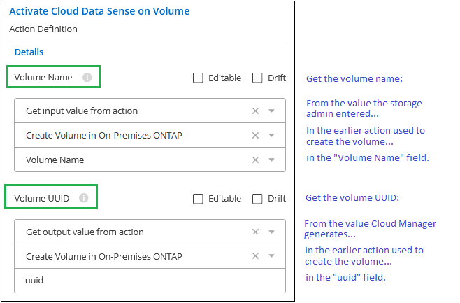
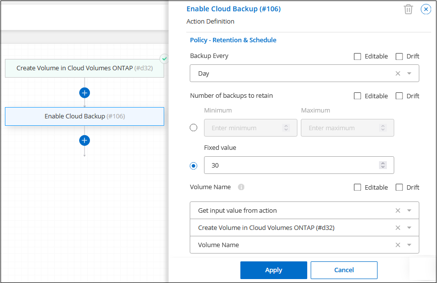
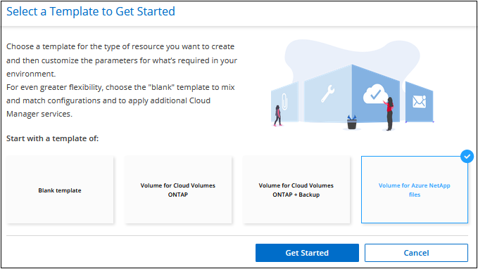
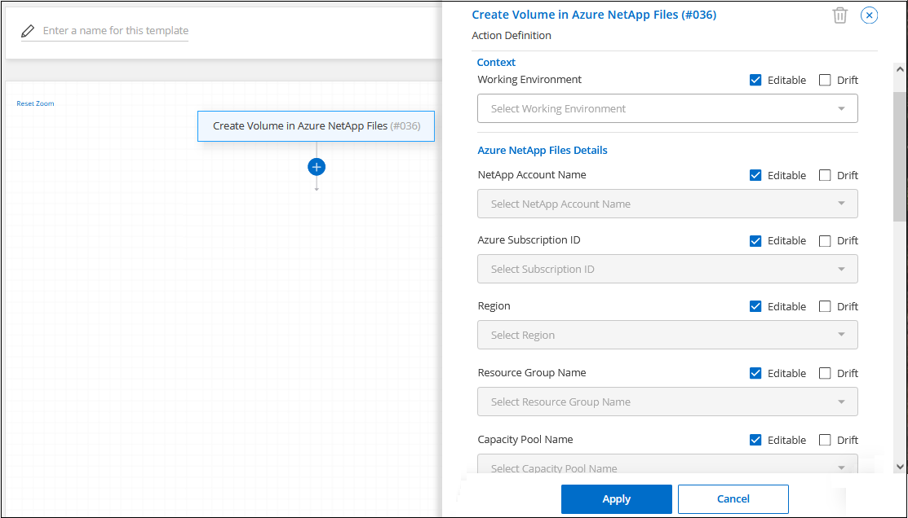
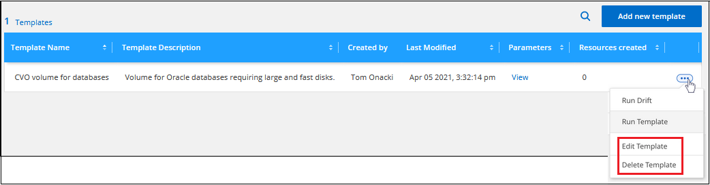

組織のアプリケーションテンプレートを作成します
ネットアップが提供する「アクション」を 1 つ以上選択し、組織がリソース作成の最適化を開始するために使用できるアプリケーションテンプレートを迅速に構築します。
クイックスタート
これらの手順を実行すると、すぐに作業を開始できます。また、残りのセクションまでスクロールして詳細を確認することもできます。
必要な前提条件を確認する
-
ユーザがテンプレートを使用して Cloud Volumes ONTAP 、オンプレミス ONTAP 、または Azure NetApp Files システム用のボリュームを作成する前に、ボリュームを導入する適切な作業環境にアクセスできることを確認してください。
-
クラウドサービス「 action 」をテンプレートに追加する場合（など） "クラウドバックアップ" または "クラウドデータの意味"をクリックして、ご使用の環境でサービスがアクティブでライセンスされていることを確認してください。
Application Templates サービスを起動します
[* AppTemplate] サービスを選択し、 [* Editor] タブをクリックして、テンプレートを選択します。
「アクション」を選択し、パラメーターを定義して、テンプレートを作成します
作成手順に従い、テンプレートによって実行されるアクションを定義します。
要件
以下の要件を読み、サポートされている構成になっていることを確認してください。
-
コネクタがない場合は、 "コネクターの作成方法を参照してください" AWS 、 Azure 、 GCP 向け。
-
Cloud Volumes ONTAP ボリュームテンプレートを作成する際には、 Cloud Volumes ONTAP 作業環境がユーザに利用できることを確認してください。で Cloud Volumes ONTAP システムを起動する方法を参照してください "AWS"、 "Azure"または、のいずれかです "GCP"。
-
オンプレミスの ONTAP ボリュームテンプレートを作成する場合は、オンプレミスの ONTAP 作業環境がユーザに利用できることを確認します。方法を参照してください "オンプレミスの ONTAP システムを検出" をクリックします。
-
Azure NetApp Files ボリュームテンプレートを作成する際には、 Azure NetApp Files の作業環境がユーザに割り当てられていることを確認します。方法を参照してください "Azure NetApp Files 作業環境を作成します" をクリックします。
-
テンプレートでクラウドバックアップを有効にする場合は、ライセンスが有効なアクティブな Cloud Backup Service が環境にあることを確認してください。
-
テンプレートでクラウドデータセンスを有効にする場合は、クラウドデータセンスサービスのライセンスが有効でアクティブな環境があることを確認してください。
テンプレートの機能
テンプレートを作成するときに使用できる機能がいくつかあり、ユーザーがテンプレートから簡単にリソースを作成できるようにします。
特殊なテンプレートコントロール
テンプレートの作成を開始する前に、テンプレート内のパラメータの値を事前に入力するときに設定できるいくつかの特別なオプションについて理解しておく必要があります。

-
編集可能なチェックボックス *
このチェックボックスをオンにすると、ストレージ管理者は、テンプレートで入力した値よりも優先されます。ストレージ管理者は値を提案しますが、リソースの作成時に値をカスタマイズできます。
オフにした場合、ユーザーは値を変更できず、管理者がリソースを展開するときにテンプレート内のハードコードされた値が常に使用されます。
-
ドリフトチェックボックス *
このチェックボックスをオンにすると、テンプレートを使用してリソースを作成するときに、 Cloud Manager がパラメータに対して入力したハードコーディングされた値を監視します。ドリフトレポートを実行すると、ドリフトで構成されたどのフィールドがテンプレート設定に適合しなくなったかを確認できます。
オフにすると、リソースが作成された後で値を任意の値に変更できます。
| ドリフト機能を使用するには、テンプレートで一部のパラメータのドリフトを定義した後で、テンプレートのドリフト機能を有効にする必要があります。これは、テンプレートを作成する最後のステップです。ドリフトは、パラメータに対して有効になっていても、テンプレートで有効になっていない場合は機能しません。 |
-
フィールドに正規表現（ regex ）を使用する *
テンプレートには、管理者がフィールドに入力できる値を定義するための正規表現を入力できるフィールドがいくつかあります。たとえば、「ボリューム名」や「共有名」などです。

たとえば、ボリューム名の正規表現として「 ^[a-zA-Z][0-9aa-zA-Za-z_]{0,149}$ 」と入力すると、「 _The name 」はアルファベットで始まる必要があります。使用できる文字は、数字、アルファベット、またはアンダースコアのみで、 150 文字以下である必要があります。
テンプレートアクション間で値を渡す
テンプレートには、前のアクションの情報を使用して、将来のアクションでフィールドにデータを入力する機能があります。たとえば、クラウドバックアップ機能を有効にするボリュームの名前を定義する際に、 Create Cloud Volumes ONTAP アクションで、ボリューム名として入力したストレージ管理者の値を使用するようにバックアップアクションを設定できます。
AppTemplate サービスで使用できる情報には、次の 3 種類があります。
-
入力値 - 以前のテンプレートアクションでストレージ管理者がフィールドに入力した実際の値です。
-
出力値 - これは、前のテンプレートアクションからリソースを作成したあとに Cloud Manager によって生成される値です。
-
独自の値を入力してください - これは入力した値であり、テンプレートの前のアクションからはアクセスされません。
たとえば、ボリュームでコンプライアンススキャンを有効にするには、 Cloud Data Sense サービスで、ストレージ管理者が入力したボリューム名（入力値）と、 Cloud Manager がボリュームを作成したときに生成する「ボリューム UUID 」（出力値）の両方が必要です。
次の図は、テンプレートのクラウドデータセンスアクションセクションでこの情報を入力する方法を示しています。

条件を使用して、ロジックステートメントに基づいて異なるアクションを実行します
条件は、テンプレートに対して、ストレージ管理者がテンプレートを実行したときに条件が true であるか false であるかに応じて、異なる操作を実行するように指示します。
たとえば、ボリュームの容量が 50GB を超える場合は、そのボリュームで Cloud Backup を有効にする必要があるというガイドラインが適用されます。ボリュームの容量が小さい場合、 Cloud Backup は有効になりません。これは、次のようにテンプレートに実装できます。

条件は次の 2 つの部分で構成されます
-
ルール - チェックする項目が true または false のいずれかであることを示します。
-
AND / OR ステートメント - 複数のルールを使用して、追加のアクションを追加するかどうかをさらに細かく指定できます。
ルールは、次の 3 つの部分で構成されます。
-
ソースフィールド * - 比較する値を取得する場所。
-
Get input value from action ：以前のテンプレートアクションのフィールドにストレージ管理者が入力した実際の値。
-
Get output value from action - 以前のテンプレートアクションからリソースを作成したあとに生成された Cloud Manager の値。
-
値を入力 - これは入力した値であり、テンプレートの前のアクションからはアクセスされません。既存のボリュームなど、すでに存在するリソースの値を指定できます。
-
演算子 * - 比較に使用される演算子。オプションは * 等号、 * 等しくない * 、 * より大きい * 、 * より小さい * 、 * より大きい * 、 * より大きいまたは等しい * 、 * より小さいまたは等しい * です。
-
フィールド値 * - 比較する実際の値。オプションは、 _Source フィールド _ のオプションと同じです。
AND / OR ステートメントを使用すると、複数のルールが True と評価されているか False であるかに基づいて、テンプレートを実行するときに条件付きでアクションを追加できます。* および * では、すべてのルールが true または false である必要があり、 * または * では、いずれか 1 つのルールのみが true または false である必要があります。
ルールで AND ステートメントと OR ステートメントの両方を使用する場合、評価プロセスは標準的な数学的順序に従います。例：
-
［ ルール 1 ］ または ［ ルール 2 ］ および ［ ルール 3 ］
このステートメントは、 < ルール 1 > または（ < ルール 2 > および < ルール 3 > ）の順に評価されます。
さまざまなタイプのテンプレートを作成する例
Cloud Volumes ONTAP ボリュームのテンプレートを作成します
を参照してください "Cloud Volumes ONTAP ボリュームをプロビジョニングする方法" Cloud Volumes ONTAP ボリュームテンプレートで実行する必要があるすべてのパラメータの詳細については、を参照してください。
この例では、「データベース用の CVO ボリューム」という名前のテンプレートを作成し、次の 2 つのアクションを含めます。
-
Cloud Volumes ONTAP ボリュームを作成します
AWS 環境のボリュームを 100GB のストレージで設定し、 Snapshot ポリシーを「 default 」に設定し、 Storage Efficiency を有効にします。
-
Cloud Backup を有効にします
日次バックアップを作成し、保持数を 30 に設定します。
-
* AppTemplate* サービスを選択し、 * Templates * タブをクリックして、 * Add New Template * をクリックします。
Select_a Template_page が表示されます。

-
作成するリソースのタイプとして * Cloud Volumes ONTAP + Backup * のボリュームを選択し、 * Get Started * をクリックします。
Cloud Volumes ONTAP アクション定義ページでのボリュームの作成（ _Create Volume in Action Definition_page ）が表示されます。
-
* アクション名 * ：オプションで、デフォルト値の代わりにカスタマイズされたアクション名を入力します。
-
* コンテキスト： * Cloud Volumes ONTAP 作業環境コンテキストを入力します（必要な場合）。
ユーザが既存の作業環境からテンプレートを起動すると、この情報は自動的に入力されます。
ユーザが（作業環境ではなく） Templates Dashboard からテンプレートを起動する際には、作業環境とボリュームを作成する SVM を選択する必要があります。そのため、これらのフィールドは「編集可能」としてマークされます。
-
* 詳細： * ボリュームの名前とサイズを入力します。
フィールド 説明 ボリューム名
フィールド内をクリックし、 5 つのオプションのいずれかを選択します。任意の名前を入力するには、 * Free Text * を選択します。ボリューム名に特定のプレフィックスまたはサフィックスを付けるか、 _contains_certain 文字を指定するか、または入力した正規表現（ regex ）のルールに従うように指定することもできます。たとえば、「 db 」には必須のプレフィックス、サフィックス、またはに次の名前を指定できます。「 db_vol1 」、「 vol1_db 」、「 vol_db_1 」などのボリューム名を追加するようユーザに要求できます。
ボリュームサイズ
許容値の範囲を指定することも、固定サイズを指定することもできます。この値は GB 単位です。この例では、固定値 100 を追加できます。
-
* 保護： * 「 default 」またはその他のポリシーを選択して Snapshot コピーを作成するか、 Snapshot コピーを作成しない場合は「 None 」を選択します。
-
* 使用プロファイル： * ネットアップの Storage Efficiency 機能をボリュームに適用するかどうかを選択します。これには、シンプロビジョニング、重複排除、圧縮が含まれます。この例では、 Storage Efficiency を有効にしておきます。
-
* ディスクタイプ：クラウドストレージプロバイダとディスクタイプを選択ディスクの選択によっては、最小および最大の IOPS またはスループット（ MB/ 秒）値を選択することもできます。基本的には、特定の Quality of Service （ QoS ；サービス品質）を定義します。
-
* プロトコルオプション： * NFS * または * SMB * を選択して、ボリュームのプロトコルを設定します。次に、プロトコルの詳細を指定します。
NFS フィールド 説明 Access Control の略
ボリュームへのアクセスにアクセス制御が必要かどうかを選択します。
エクスポートポリシー
ボリュームにアクセスできるサブネット内のクライアントを定義するエクスポートポリシーを作成します。
NFS バージョン
ボリュームの NFS バージョンを選択します。 nfsv3_or_nfsv4 、またはその両方を選択できます。
SMB フィールド 説明 共有名
フィールド内をクリックし、 5 つのオプションのいずれかを選択します。任意の名前（フリーテキスト）を入力するか、共有名に特定のプレフィックスまたはサフィックスを付加する、 _contains_certain 文字を使用する、または入力した正規表現（ regex ）のルールに従うように指定できます。
権限
ユーザとグループ（アクセス制御リストまたは ACL とも呼ばれる）の共有へのアクセスのレベルを選択します。
ユーザ / グループ
ローカルまたはドメインの Windows ユーザまたはグループ、あるいは UNIX ユーザまたはグループを指定します。ドメインの Windows ユーザ名を指定する場合は、 domain\username 形式でユーザのドメインを指定する必要があります。
-
* 階層化： * ボリュームに適用する階層化ポリシーを選択します。このボリュームからオブジェクトストレージにコールドデータを階層化しない場合は、「なし」に設定します。
を参照してください "ボリューム階層化ポリシー" 概要については、およびを参照してください "使用頻度の低いデータをオブジェクトストレージに階層化します" をクリックして、環境が階層化用に設定されていることを確認してください。
-
このアクションに必要なパラメーターを定義したら、 * 適用 * をクリックする。
テンプレートの値が正しく入力されている場合は、 [ ボリュームを Cloud Volumes ONTAP に作成 ] ボックスに緑のチェックマークが追加されます。
-
クラウドバックアップを有効にする * ボックスをクリックすると、クラウドバックアップアクション定義を有効にする _ ダイアログが表示され、クラウドバックアップの詳細を入力できます。

-
日次バックアップを作成するバックアップポリシーを定義し、 30 日間の保持期間を設定します。
-
ボリューム名フィールドの下には、バックアップを有効にするボリュームを示す 3 つのフィールドがあります。を参照してください これらのフィールドの入力方法。
-
[ 適用 ] をクリックすると、 [ クラウドバックアップ ] ダイアログが保存されます。
-
左上に、データベース * （この例では）のテンプレート名 * CVO ボリュームを入力してください。
-
[* 設定とドリフト * ] をクリックして、このテンプレートを他の同様のテンプレートと区別できるように、より詳細な概要を提供します。したがって、テンプレート全体のドリフトを有効にしてから、 [ * 適用 * ] をクリックします。
ドリフトを使用すると、 Cloud Manager は、このテンプレートの作成時に入力したパラメータのハードコーディング値を監視できます。
-
[ テンプレートの保存 *] をクリックします。
テンプレートが作成され、新しいテンプレートが表示されるテンプレートダッシュボードに戻ります。
を参照してください テンプレートについてユーザに説明する必要がある内容。
Azure NetApp Files ボリュームのテンプレートを作成します
Azure NetApp Files ボリュームのテンプレートは、 Cloud Volumes ONTAP ボリュームのテンプレートを作成する場合と同じ方法で作成します。
を参照してください "Azure NetApp Files ボリュームをプロビジョニングする方法" ANF ボリュームテンプレートで実行する必要があるすべてのパラメータの詳細については、を参照してください。
-
* AppTemplate* サービスを選択し、 * Templates * タブをクリックして、 * Add New Template * をクリックします。
Select_a Template_page が表示されます。

-
作成するリソースのタイプとして * Volume for Azure NetApp Files * を選択し、 * Get Started * をクリックします。
Azure NetApp Files アクション定義ページでのボリュームの作成（ _Create Volume in Action Definition_page ）が表示されます。

-
* アクション名 * ：オプションで、デフォルト値の代わりにカスタマイズされたアクション名を入力します。
-
* コンテキスト： * Cloud Volumes ONTAP 作業環境コンテキストを入力します（必要な場合）。
ユーザが既存の作業環境からテンプレートを起動すると、この情報は自動的に入力されます。
ユーザが（作業環境ではなく） Templates Dashboard からテンプレートを起動する場合、ボリュームを作成する作業環境を選択する必要があります。そのため、これらのフィールドは「編集可能」としてマークされます。
-
* 詳細： * 新規または既存の Azure NetApp Files アカウントの詳細を入力します。
フィールド 説明 ネットアップアカウント名
アカウントに使用する名前を入力します。
Azure サブスクリプション ID
Azure サブスクリプション ID を入力します。これは、「 2b04f26-7de6-42eb-9234-e2903d7s327 」のような形式のフル ID です。
地域
を使用してリージョンを入力します "内部リージョン名"。
リソースグループ名
使用するリソースグループの名前を入力します。
Capacity Pool Name の略
既存の容量プールの名前を入力します。
-
* ボリュームの詳細： * ボリュームの名前とサイズ、ボリュームを配置する VNet とサブネット、および必要に応じてボリュームのタグを指定します。
フィールド 説明 ボリューム名
フィールド内をクリックし、 5 つのオプションのいずれかを選択します。任意の名前を入力するには、 * Free Text * を選択します。ボリューム名に特定のプレフィックスまたはサフィックスを付けるか、 _contains_certain 文字を指定するか、または入力した正規表現（ regex ）のルールに従うように指定することもできます。たとえば、「 db 」には必須のプレフィックス、サフィックス、またはに次の名前を指定できます。「 db_vol1 」、「 vol1_db 」、「 vol_db_1 」などのボリューム名を追加するようユーザに要求できます。
ボリュームサイズ
許容値の範囲を指定することも、固定サイズを指定することもできます。この値は GB 単位です。
サブネット
VNet とサブネットを入力します。この値には、完全パスが含まれます。形式は「 /subscription/<subscription_id>/resourceGroups/<resource_group>/provider/Microsoft.Network/virtualNetworks/<vpc_name>/subnets/<subhet_name>" です。
-
* プロトコル：ボリュームのプロトコルを設定するには、 * nfsv3 * 、 * NFSv4.1 * 、または * smb * を選択します。次に、プロトコルの詳細を指定します。
NFS フィールド 説明 ボリュームパス
5 つのオプションのいずれかを選択します。管理者が任意のパスを入力できるようにするには、 * フリーテキスト * を選択するか、パス名に特定の接頭辞または接尾辞を付けるか、 _contains_certain 文字を使用するか、または入力した正規表現（ regex ）の規則に従うように指定します。
エクスポートポリシールール
ボリュームにアクセスできるサブネット内のクライアントを定義するエクスポートポリシーを作成します。
SMB フィールド 説明 ボリュームパス
5 つのオプションのいずれかを選択します。管理者が任意のパスを入力できるようにするには、 * フリーテキスト * を選択するか、パス名に特定の接頭辞または接尾辞を付けるか、 _contains_certain 文字を使用するか、または入力した正規表現（ regex ）の規則に従うように指定します。
-
* Snapshot コピー： * 既存のボリュームの特性を使用して新しいボリュームを作成する場合は、既存のボリューム Snapshot の Snapshot ID を入力します。
-
このアクションに必要なパラメーターを定義したら、 * 適用 * をクリックする。
-
テンプレートに使用する名前を左上に入力します。
-
[* 設定とドリフト * ] をクリックして、このテンプレートを他の同様のテンプレートと区別できるように、より詳細な概要を提供します。したがって、テンプレート全体のドリフトを有効にしてから、 [ * 適用 * ] をクリックします。
ドリフトを使用すると、 Cloud Manager は、このテンプレートの作成時に入力したパラメータのハードコーディング値を監視できます。
-
[ テンプレートの保存 *] をクリックします。
テンプレートが作成され、新しいテンプレートが表示されるテンプレートダッシュボードに戻ります。
を参照してください テンプレートについてユーザに説明する必要がある内容。
オンプレミスの ONTAP ボリューム用のテンプレートを作成します
を参照してください "オンプレミスの ONTAP ボリュームをプロビジョニングする方法" オンプレミスの ONTAP ボリュームテンプレートで実行する必要があるすべてのパラメータの詳細については、を参照してください。
-
* AppTemplate* サービスを選択し、 * Templates * タブをクリックして、 * Add New Template * をクリックします。
Select_a Template_page が表示されます。

-
[ 空白のテンプレート ] を選択し、 [ 開始 ] をクリックします。
[ 新規アクションの追加（ Add New Action） ] ページが表示されます。
-
作成するリソースのタイプとして * Create Volume in On-Premises ONTAP * を選択し、 * Apply * をクリックします。
オンプレミスの ONTAP アクション定義ページでのボリュームの作成（ _Create Volume in On-Premises Action Definition_page ）が表示されます。
-
* アクション名 * ：オプションで、デフォルト値の代わりにカスタマイズされたアクション名を入力します。
-
* コンテキスト： * 必要に応じて、オンプレミスの ONTAP 作業環境を入力します。
ユーザが既存の作業環境からテンプレートを起動すると、この情報は自動的に入力されます。
ユーザが（作業環境ではなく） Templates Dashboard からテンプレートを起動する際には、作業環境、 SVM 、およびボリュームを作成するアグリゲートを選択する必要があります。
-
* 詳細： * ボリュームの名前とサイズを入力します。
フィールド 説明 ボリューム名
フィールド内をクリックし、 5 つのオプションのいずれかを選択します。任意の名前を入力するには、 * Free Text * を選択します。ボリューム名に特定のプレフィックスまたはサフィックスを付けるか、 _contains_certain 文字を指定するか、または入力した正規表現（ regex ）のルールに従うように指定することもできます。たとえば、「 db 」には必須のプレフィックス、サフィックス、またはに次の名前を指定できます。「 db_vol1 」、「 vol1_db 」、「 vol_db_1 」などのボリューム名を追加するようユーザに要求できます。
ボリュームサイズ
許容値の範囲を指定することも、固定サイズを指定することもできます。この値は GB 単位です。この例では、固定値 100 を追加できます。
-
* 保護： * 「 default 」またはその他のポリシーを選択して Snapshot コピーを作成するか、 Snapshot コピーを作成しない場合は「 None 」を選択します。
-
* 使用プロファイル： * ネットアップの Storage Efficiency 機能をボリュームに適用するかどうかを選択します。これには、シンプロビジョニング、重複排除、圧縮が含まれます。この例では、 Storage Efficiency を有効にしておきます。
-
* プロトコルオプション： * NFS * または * SMB * を選択して、ボリュームのプロトコルを設定します。次に、プロトコルの詳細を指定します。
NFS フィールド 説明 Access Control の略
ボリュームへのアクセスにアクセス制御が必要かどうかを選択します。
エクスポートポリシー
ボリュームにアクセスできるサブネット内のクライアントを定義するエクスポートポリシーを作成します。
NFS バージョン
ボリュームの NFS バージョンを選択します。 nfsv3_or_nfsv4 、またはその両方を選択できます。
SMB フィールド 説明 共有名
フィールド内をクリックし、 5 つのオプションのいずれかを選択します。任意の名前（フリーテキスト）を入力するか、共有名に特定のプレフィックスまたはサフィックスを付加する、 _contains_certain 文字を使用する、または入力した正規表現（ regex ）のルールに従うように指定できます。
権限
ユーザとグループ（アクセス制御リストまたは ACL とも呼ばれる）の共有へのアクセスのレベルを選択します。
ユーザ / グループ
ローカルまたはドメインの Windows ユーザまたはグループ、あるいは UNIX ユーザまたはグループを指定します。ドメインの Windows ユーザ名を指定する場合は、 domain\username 形式でユーザのドメインを指定する必要があります。
-
このアクションに必要なパラメーターを定義したら、 * 適用 * をクリックする。
テンプレートの値が正しく入力されている場合は、「オンプレミスの ONTAP にボリュームを作成」ボックスに緑のチェックマークが追加されます。
-
左上にテンプレート名を入力します。
-
[* 設定とドリフト * ] をクリックして、このテンプレートを他の同様のテンプレートと区別できるように、より詳細な概要を提供します。したがって、テンプレート全体のドリフトを有効にしてから、 [ * 適用 * ] をクリックします。
ドリフトを使用すると、 Cloud Manager は、このテンプレートの作成時に入力したパラメータのハードコーディング値を監視できます。
-
[ テンプレートの保存 *] をクリックします。
テンプレートが作成され、新しいテンプレートが表示されるテンプレートダッシュボードに戻ります。
を参照してください テンプレートについてユーザに説明する必要がある内容。
テンプレートの作成後の作業
テンプレートを作成したら、新しいボリュームの作成時にテンプレートを使用するようストレージ管理者に通知する必要があります。
それらをに示すことができます "テンプレートを使用したリソースの作成" を参照してください。
テンプレートを編集または削除します
パラメータを変更する必要がある場合は、テンプレートを変更できます。変更を保存すると、テンプレートから作成された以降のすべてのリソースに新しいパラメータ値が使用されます。
不要になったテンプレートを削除することもできます。テンプレートを削除しても、そのテンプレートで作成されたリソースには影響しません。ただし、テンプレートを削除した後にドリフトコンプライアンスチェックを実行することはできません。

 GitHub で編集
GitHub で編集